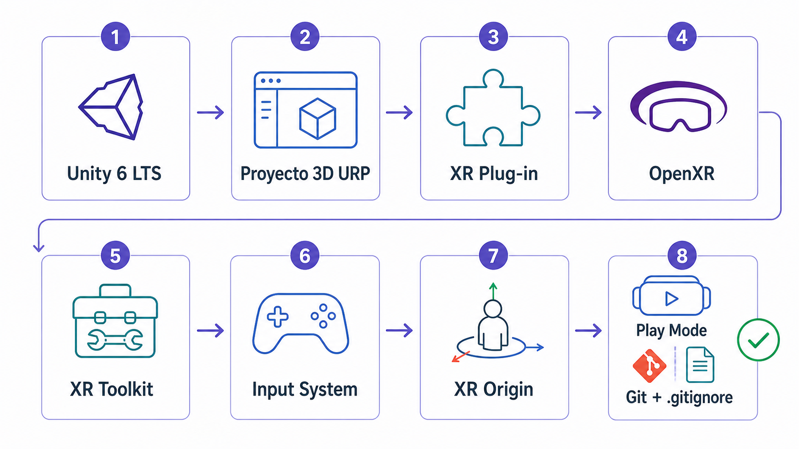
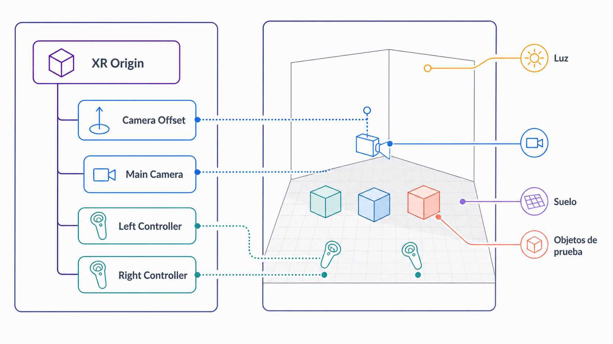
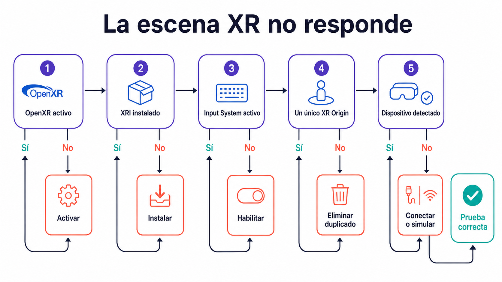

Unity Hub
Aplicación que permite instalar versiones de Unity, crear proyectos y gestionar módulos adicionales.
Dejar un proyecto Unity totalmente configurado para desarrollo XR y con una primera escena de prueba ejecutable; opcionalmente, guardar el proyecto en GitHub.
En este primer laboratorio se prepara el entorno de desarrollo necesario para comenzar a crear experiencias inmersivas con Unity. El objetivo no es todavía diseñar una experiencia compleja, sino construir una base técnica estable que servirá para todos los laboratorios posteriores. Durante la sesión se instalará o verificará Unity Hub y Unity 6 LTS, se creará el proyecto base del curso, se configurarán los paquetes principales de XR, se añadirá un XR Origin a la escena y se preparará una primera escena de prueba con suelo, iluminación y objetos básicos. De forma opcional, se podrá conectar el proyecto con GitHub para guardar una copia en la nube y comenzar a documentar sus versiones desde el primer día.
Aplicación que permite instalar versiones de Unity, crear proyectos y gestionar módulos adicionales.
Versión estable de Unity recomendada para el curso. Usar una versión LTS ayuda a reducir problemas de compatibilidad durante el desarrollo.
Universal Render Pipeline. Pipeline gráfico recomendado para proyectos 3D ligeros, escalables y adecuados para prototipos XR.
Término general que agrupa realidad virtual, realidad aumentada y realidad mixta.
Estándar abierto para desarrollar aplicaciones XR compatibles con múltiples dispositivos.
Sistema de Unity para gestionar proveedores XR según la plataforma de destino.
Paquete de Unity que permite crear interacciones XR mediante componentes como interactores, interactuables, locomoción y UI XR.
Sistema moderno de entrada de Unity para trabajar con dispositivos, controladores, teclado, ratón y mandos XR.
Objeto central de una escena XR. Define la posición del usuario, la cámara y los controladores dentro del espacio virtual.
Herramienta que permite simular un dispositivo XR desde el editor. Es útil cuando no se dispone de headset durante la práctica.
Realiza esta verificación después de crear el proyecto 3D URP y antes de configurar XR. Estos tres paquetes deben quedar instalados desde Lab 1; la plantilla puede incluirlos como paquetes directos o dependencias.
| Paquete | Identificador | Comprobación |
|---|---|---|
| Universal RP | com.unity.render-pipelines.universal | Base gráfica URP del curso. |
| Shader Graph | com.unity.shadergraph | Verificar también como dependencia de URP. |
| Input System | com.unity.inputsystem | Base de entrada del curso. |
Este curso prepara XR en Lab 1. Completa este bloque tras verificar los paquetes iniciales y antes de añadir XR Origin.
| Paquete | Identificador | Comprobación |
|---|---|---|
| XR Plug-in Management | com.unity.xr.management | Instalar solo si falta. |
| OpenXR Plugin | com.unity.xr.openxr | Instalar solo si falta. |
| XR Interaction Toolkit | com.unity.xr.interaction.toolkit | Instalar solo si falta. |
| Input System | com.unity.inputsystem | Verificar la instalación realizada al inicio. |
Completar Verificación de Paquetes Iniciales (URP + Base del Curso) ahora que el proyecto está creado. No reinstalar paquetes presentes.
Completar Preparación del Proyecto para XR (OpenXR + Interacción). Verificar XR Plug-in Management, OpenXR Plugin, XR Interaction Toolkit e Input System en In Project.


Prepara un entorno sencillo para comprobar la escala y la orientación en XR. Realiza estos cambios fuera de Play Mode.
| Objeto | Position (X, Y, Z) |
|---|---|
| Test_Cube_01 | (−2, 0.5, 3) |
| Test_Cube_02 | (−1, 0.5, 2.5) |
| Test_Cube_03 | (0, 0.5, 2) |
| Test_Cube_04 | (1, 0.5, 2.5) |
| Test_Cube_05 | (2, 0.5, 3) |
Si utilizas tres cubos, puedes colocarlos en (−1, 0.5, 2.5), (0, 0.5, 2) y (1, 0.5, 2.5). Z positivo sitúa los objetos delante del origen sin rotación; el visor determinará después hacia dónde mira el usuario.
Guarda la escena para conservar sus objetos y su configuración. La carpeta _Project separa los archivos del curso de los Samples y recursos importados.
Este paso no es obligatorio para completar el laboratorio. Se recomienda para conservar una copia del proyecto en la nube y disponer de historial de cambios.
# ES: Excluye del repositorio la ruta que coincide con «[Ll]ibrary/».
# EN: Excludes the repository path matching '[Ll]ibrary/'.
[Ll]ibrary/
# ES: Excluye del repositorio la ruta que coincide con «[Tt]emp/».
# EN: Excludes the repository path matching '[Tt]emp/'.
[Tt]emp/
# ES: Excluye del repositorio la ruta que coincide con «[Oo]bj/».
# EN: Excludes the repository path matching '[Oo]bj/'.
[Oo]bj/
# ES: Excluye del repositorio la ruta que coincide con «[Bb]uild/».
# EN: Excludes the repository path matching '[Bb]uild/'.
[Bb]uild/
# ES: Excluye del repositorio la ruta que coincide con «[Bb]uilds/».
# EN: Excludes the repository path matching '[Bb]uilds/'.
[Bb]uilds/
# ES: Excluye del repositorio la ruta que coincide con «[Ll]ogs/».
# EN: Excludes the repository path matching '[Ll]ogs/'.
[Ll]ogs/
# ES: Excluye del repositorio la ruta que coincide con «[Uu]ser[Ss]ettings/».
# EN: Excludes the repository path matching '[Uu]ser[Ss]ettings/'.
[Uu]ser[Ss]ettings/
# ES: Excluye del repositorio la ruta que coincide con «.vs/».
# EN: Excludes the repository path matching '.vs/'.
.vs/
# ES: Excluye del repositorio la ruta que coincide con «.idea/».
# EN: Excludes the repository path matching '.idea/'.
.idea/
# ES: Excluye del repositorio la ruta que coincide con «*.csproj».
# EN: Excludes the repository path matching '*.csproj'.
*.csproj
# ES: Excluye del repositorio la ruta que coincide con «*.sln».
# EN: Excludes the repository path matching '*.sln'.
*.sln
# ES: Excluye del repositorio la ruta que coincide con «*.user».
# EN: Excludes the repository path matching '*.user'.
*.user
# ES: Excluye del repositorio la ruta que coincide con «*.pidb».
# EN: Excludes the repository path matching '*.pidb'.
*.pidb
# ES: Excluye del repositorio la ruta que coincide con «*.booproj».
# EN: Excludes the repository path matching '*.booproj'.
*.booproj
# ES: Excluye del repositorio la ruta que coincide con «*.svd».
# EN: Excludes the repository path matching '*.svd'.
*.svd
# ES: Excluye del repositorio la ruta que coincide con «*.pdb».
# EN: Excludes the repository path matching '*.pdb'.
*.pdb
# ES: Excluye del repositorio la ruta que coincide con «*.mdb».
# EN: Excludes the repository path matching '*.mdb'.
*.mdb
# ES: Excluye del repositorio la ruta que coincide con «sysinfo.txt».
# EN: Excludes the repository path matching 'sysinfo.txt'.
sysinfo.txtAbrir Project → Assets → _Project → Scenes → Test_XR_01 con doble clic. Preparar la escena fuera de Play Mode y elegir simulador o visor para la prueba.
Sí: conectar el visor requiere preparar también su conexión XR. Para probar desde el editor, el visor y el ordenador deben admitir PC VR.
Abrir Window → General → Console, revisar los errores rojos y corregirlos antes de continuar. Detener Play y guardar mediante File → Save; los cambios realizados durante Play normalmente no se conservan.
Referencias: sample XR Device Simulator, uso del simulador y configuración OpenXR.
El paquete no está instalado.
La configuración del proyecto está incompleta.
Los samples del XR Interaction Toolkit no se han importado.
Se ha activado Input System.
Se mantiene la Main Camera original y además se ha añadido XR Origin.
No se importó el sample, Input System no está activo, faltan acciones de input o la escena no tiene XR Origin correctamente configurado.
Falta un .gitignore adecuado para Unity.

Primera escena de orientación XR. Crear una escena mínima que permita comprobar escala, punto de vista y orientación espacial. Este ejercicio no se califica directamente; sirve para preparar la parte práctica de la Tarea 1.
La visita a la página se registra como progreso de lectura. Esta confirmación registra la sesión como completada.